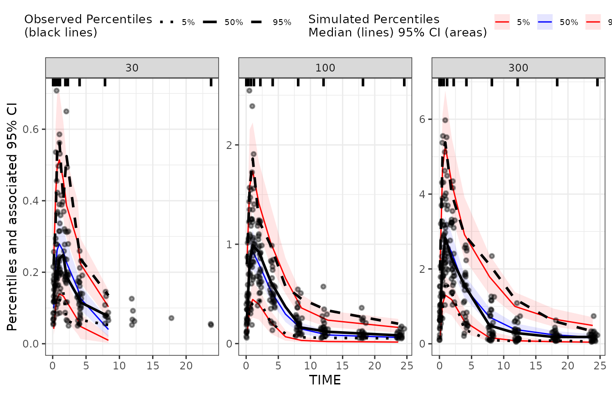

Simulations for Visual Predictive Checks (VPC)
This vignette shows how to generate simulations for generation of VPC
plots. While NMsim does not include any functionality for
summarizing quantiles or plotting, it provides powerful ways to obtain
the simulated data needed. We shall see how the tidyvpc
package easily creates VPC plots based on the simulation results.
Default option: reuse estimation data for simulation
Normally, the two main arguments to NMsim are the path to the input
control stream (file.mod) and the simulation input data set
(data). But if we leave out the the data
argument, NMsim will re-use the estimation data for the simulation. That
is the simulation we need for a VPC. We will use an example model
included with NMsim:
file.project <- function(...)file.path(system.file("examples",package="NMsim"),...)
file.mod <- file.project("nonmem/xgxr032.mod")
NMdataConf(path.nonmem="/opt/NONMEM/nm75/run/nmfe75")
NMdataConf(dir.sims="~/NMsim_vignette",
dir.res="simulate-results",
allow.unknown=TRUE ## necessary for dir.sims and dir.res
## until NMdata 0.1.5
)
set.seed(43)
## notice the data argument is not used.
simres.vpc <- NMsim(file.mod,
table.vars=c("PRED","IPRED", "Y"),
name.sim="vpc_01"
,subproblems=500
,as.fun="data.table")The performed simulation is similar to the one produced by the
VPC function in PSN. However, there are some
important differences.
The simulation results are automatically read into R.
The
table.varsargument allows the user to narrow down the variables to be written to disk. This can speed up the simulation considerably and reduce the amount of disk space the Nonmem simulation results require.No postprocessing of the results is being done by
NMsim. See below how to easily do that.
Plotting using tidyvpc
As mentioned, NMsim does not postprocess the simulation
for generation of a VPC plot, nor does it offter any plotting functions.
The R package called tidyvpc offer those two things and is
moreover implemented in data.table, so it’s fast. The
following simple code shows how to get from the results from
NMsim to the VPC plot with tidyvpc.
library(ggplot2)
library(tidyvpc)
#> tidyvpc is part of Certara.R!
#> Follow the link below to learn more about PMx R package development at Certara.
#> https://certara.github.io/R-Certara/
library(NMdata)
## read the data as it was used in the Nonmem model
res <- NMscanData(file.mod,as.fun="data.table",quiet=TRUE)
## only plot observation events from estimation data set
data.obs <- res[EVID==0]
## Only plot simulated observation events
data.sim <- simres.vpc[EVID==0]
## run vpc
vpc1 <-
observed(data.obs, x = TIME, y = DV) |>
simulated(data.sim, y = Y) |>
stratify(~DOSE) |>
binning(bin = "ntile", nbins = 9) |>
vpcstats()
plot(vpc1)
Use a different input data set
In the first example we used the exact same data as was used for the
estimation. This is a common way to produce a VPC, and we saw the
advantage that the user does not risk making mistakes in preparing the
data set for the simulations. However, it may be of interest to include
additional data or even a different data set in the simulation. It could
be including data points that were excluded in estimation (like samples
below the quantification limit) or a separate study that was not
included in the model. All you have to do is to read the data you want
and provide it in NMsim’s data argument.
Make use of the cluster
We will repeat the same as above, but now 500 times
(subproblems). We make use of a few more arguments for
efficiency. sge means that the jobs will be sent to the
cluster. The nc argument is now used meaning only one core
will be used per job. If each node on the cluster has 16 cores, this
could engage 500/16 ~ 32 nodes in parallel, with all jobs executed at
the same time. We supply the path to the Nonmem executable. With PSN
this should work without specifying the Nonmem path, but PSN for some
reason takes more time submitting the jobs to the cluster. If nodes are
available, the following simulation should not take more than a couple
of minutes to execute.
file.res <- "simulate-results/simpaths-vpc.rds"